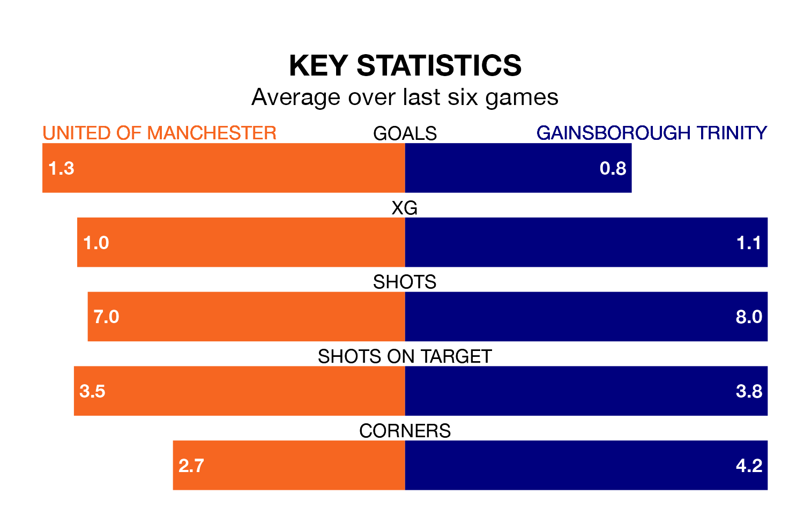

United of Manchester host Gainsborough Trinity on Saturday at Broadhurst Park in Northern Premier League.
In their last league match, on Tuesday, United of Manchester lost to Marine 3-0 at home.
Gainsborough Trinity also lost, 2-0 at home against Morpeth Town on January 13.
In the last 10 years, United of Manchester and Gainsborough Trinity have played each other on 11 occasions. United of Manchester won six of them, Gainsborough Trinity four, and they drew once.
On average, F.C. United scored 1.6 goals and the Blues 1.5 in those matches.
Their last meeting was on December 2, when United of Manchester won 3-1 away.
Gainsborough Trinity are 17th in the table after 26 games, of which they have won eight and drawn five, earning 29 points.
United of Manchester are two places ahead of the Blues in 15th, with 10 wins and four draws putting them on 34 points.
With 33 goals in 26 games so far this season, the visitors are scoring at below the league average rate with 1.3 goals per game. And they are conceding more than average, letting in 49 goals at a rate of 1.9 per game.
F.C. United are also below average scorers, with 1.5 goals per game, compared to a league average of 1.7. They have conceded 2.0 goals per game.
The home team are in mixed form in Northern Premier League, with three wins and three losses from their last six games.
With two wins and four losses over that period, Gainsborough Trinity's form is worse – they have taken six points from 18, compared to United of Manchester's nine.
Updated: 15:45 (UTC), 02/02/24